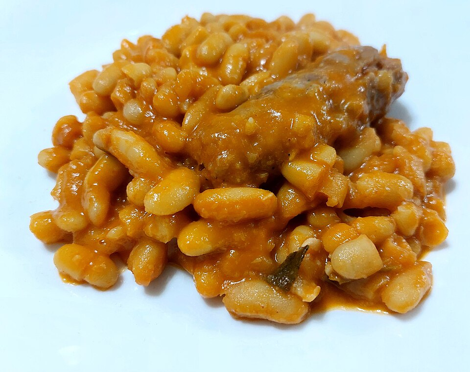

Dinner, Lunch, Protein, Quick, By Claude
1 lb chicken sausage (4 links; Whole Foods butcher-counter Italian or spinach-feta), sliced into coins
1 tablespoon olive oil
1 shallot or 1/2 onion, diced
4 garlic cloves, sliced
1/2 teaspoon red pepper flakes
2 cans (15 oz) cannellini beans, drained and rinsed
1 cup low-sodium chicken broth
1 bunch lacinato kale (about 6 cups), stems removed, chopped
1/2 lemon, juiced
1/4 cup grated Parmesan
Salt and black pepper to taste
A 15-minute one-pan dinner using butcher-counter chicken sausage. The beans add fiber, which keeps you full. It reheats well, so make all 4 servings at once.
Heat the oil in a large skillet over medium-high. Brown the sausage coins 4–5 minutes. If the sausage is raw, remove the casings and crumble it instead, and cook until no pink remains.
Add the shallot, garlic, and pepper flakes and cook 2 minutes.
Add the beans and broth. Lightly mash about a quarter of the beans against the pan to thicken the liquid. Simmer 3 minutes.
Stir in the kale in handfuls and cook 3–4 minutes until wilted and tender.
Off the heat, stir in the lemon juice and Parmesan. Season with salt and pepper.
Keeps 4 days. On run days, serve with crusty bread or over farro.
For more protein, use 1 1/2 lb sausage (about 40g protein per serving).
~410 CALORIES
31G PROTEIN
14G FAT
38G CARBS
10G FIBER
Photo: Salsiccia con fagioli all'uccelletto - tipoco piatto toscano.jpg by Anna.Massini, CC BY 4.0, via Wikimedia Commons. Representative image, not this exact recipe.